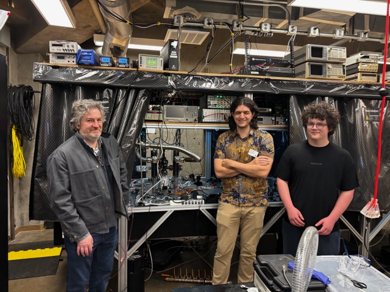

On April 17, I visited Dr. Ben Olsen at the Olsen Lab to get a hands-on look at their experimental AMO (atomic, molecular, and optical) physics setup.
While quantum algorithms get most of the spotlight, quantum simulation relies heavily on hardware precision: ultra-high vacuum chambers, laser optics, and magnetic trapping.

Key Takeaways & Lab Highlights
- Simulating Exotic Physics: How trapped lithium gases cooled to near absolute zero, colder than deep space, serve as clean analog simulators for complex phenomena, from superconductors to neutron stars.
- Laser Cooling & Deceleration: Walking through student research on Zeeman slower electromagnets and a 2D Magneto-Optical Trap (2D MOT) used to slow and capture high-velocity atomic beams.
- Optical Table Architecture: Tracing the hardware path across the main apparatus, including acousto-optic modulators (AOMs), saturated absorption spectroscopy for laser stabilization, and custom 3D-printed mounts for permanent Neodymium magnets.
A huge thank you to Dr. Olsen for the hour-long tour, walking through the student poster sessions, and sharing the engineering challenges behind ultracold atom experiments.